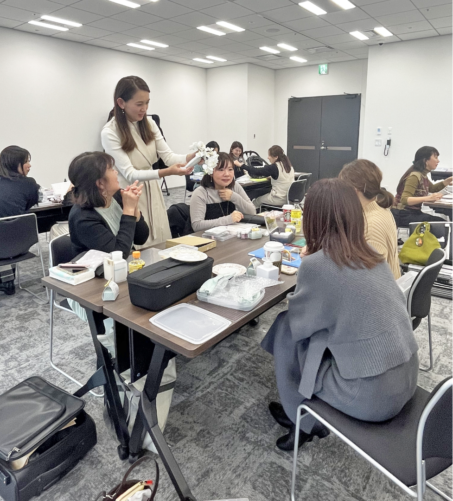
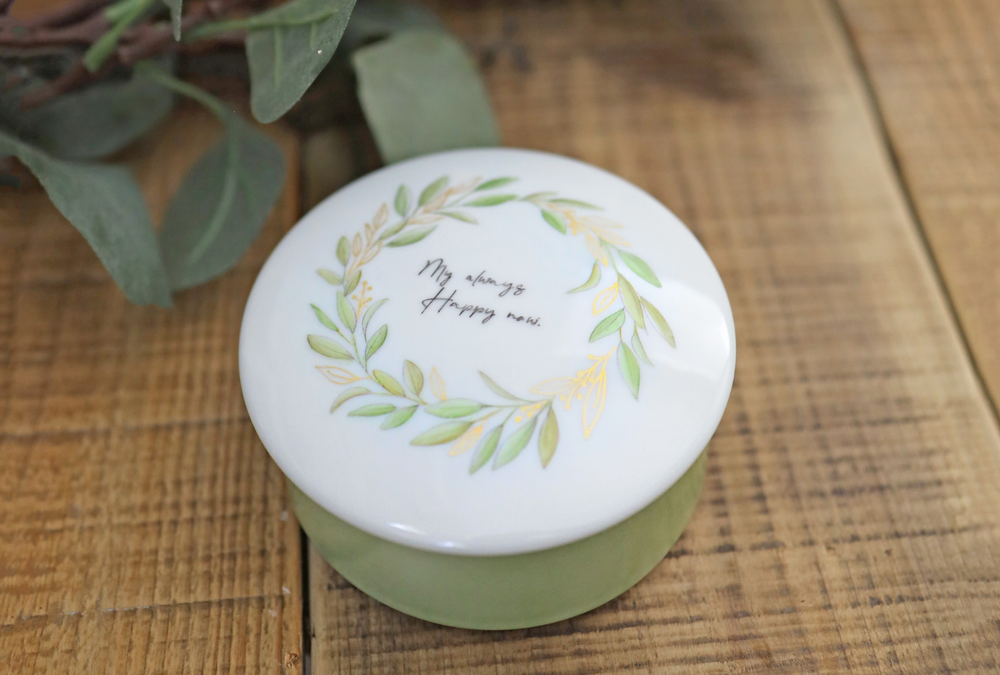
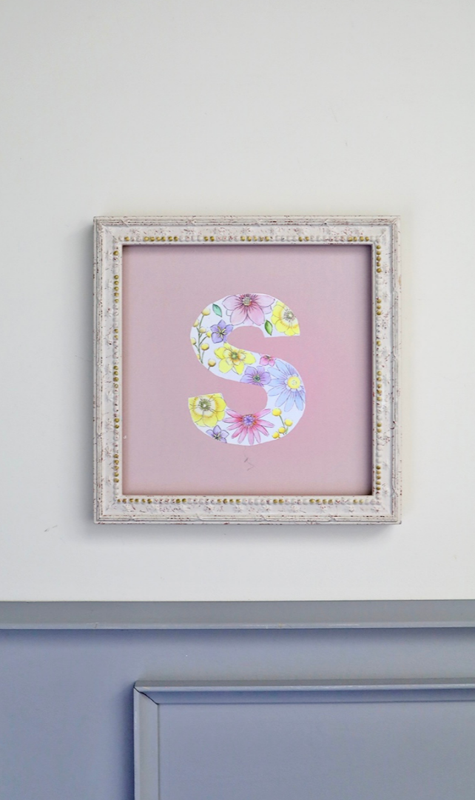
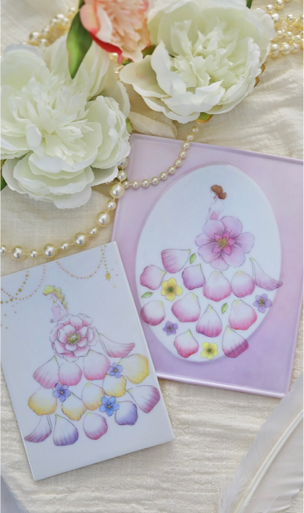

Future
受講後のあなたへ
絵の具が、あなたの強みになる。
Future 1

絵の具に自信が持て、指導できるようになる
生徒さんのリピート率が上がり、絵の具が自分の強みに変わる。
Future 2

「そんな食器見たことない！」と言われる作品が生まれる
デザイン理論を身につけたとき、他にはない洗練された作品が作れるようになる。
Future 3

「この先生からしか習えない」と選ばれる存在になれる
オリジナルの講座を自ら作り上げ、指名される先生になれる。
Future 4

作れる作品の幅が何倍も広がる
転写紙に絵の具をプラスして、表現の可能性が一気に広がる。
Future 5

苦手だった絵の具で、絵が描けるようになる
「私にもできた」という体験が、先生としての自信に変わる。
Future 6

目を輝かせながら生徒さんに提案できる先生になれる
あなたのワクワクが教室全体に広がっていく。